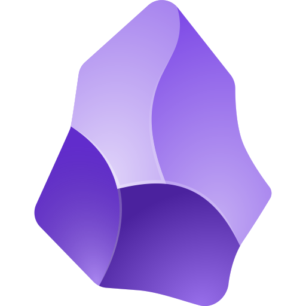

Sharpen your thinking.
Obsidian is the private and flexible writing app that
adapts to the way you think.

Obsidian is the private and flexible writing app that
adapts to the way you think.
Your thoughts are yours.
Obsidian stores notes on your device, so you can access them quickly, even offline. No one else can read them, not even us.
Your mind is unique.
With hundreds of plugins and themes, you can shape Obsidian to fit your way of thinking.
Your knowledge should last.
Obsidian uses open, non-proprietary files, so you're never locked in, and can preserve your data for the long term.
